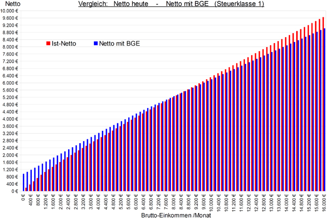
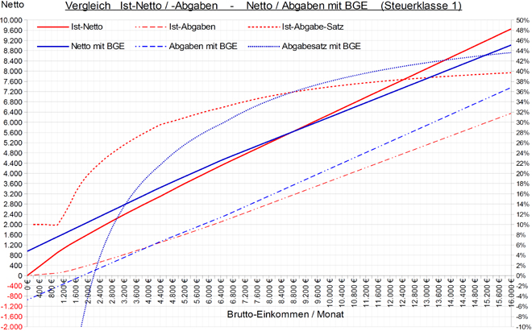

Wer hat mit BGE mehr Netto als bisher?
Bis zu welchem Brutto-Einkommens sinkt die Abgaben-Belastung und steigt das Netto-Einkommen mit Grundeinkommen im Vergleich zu heute?
In BGE-Modellen wird das Brutto-Einkommen, bei dem die abzuführende Steuer und die Höhe des Grundeinkommens identisch sind, als Transfergrenze bezeichnet. Jeder Bezieher eines Einkommens unterhalb der Transfergrenze ist Netto-Empfänger, alle darüber Netto-Zahler. In den Diagrammen ist die Transfergrenze der Schnittpunkt der Geraden Netto-Einkommen und Brutto-Einkommen.
In dem Tabellen-Beispiel mit 1.260 € Grundeinkommen und einem einheitlichen Steuersatz von 53 % ab dem ersten Euro wäre die Transfergrenze bei einem Brutto-Einkommen von ca 1.800 €. D.h. der Steuerabzug von 1.260 € entspricht in der Höhe exakt dem ausbezahlten Grundeinkommen von 1.260 €. Der Saldo aus Grundeinkommen und Steuerabzug ist dann 0 € und das Netto-Einkommen ist gleich dem Brutto-Einkommen, der effektive Steuersatz 0 %.
Ab einem Einkommen von 1 € vermindert sich somit das Grundeinkommen von 1.260 € um die gezahlte Steuer. Ab der Transfergrenze ist die gezahlte Steuer höher als das Grundeinkommen und der Effektiv-Steuersatz steigt von 0 % bis annähernd 53 % bei sehr hohen Einkommen.
Dennoch hat diese Transfergrenze keine praktische Bedeutung für die Ermittlung der Gewinner und Verlierer eines Grundeinkommens, denn an der Transfergrenze in diesem Rechenbeispiel werden heute nicht 0 €, sondern bereits 330 € (fast 20 %) Steuern und KV-/PV-Beitrag auf das Brutto-Einkommen entrichtet.
Tatsächlich wäre bei 1.260 € Grundeinkommen und einem Steuersatz von 53 % das Nettoeinkom-men im BGE-Modell und das heutige Netto-Einkommen erst bei Brutto 8.650 € gleich und erst für Einkommen über 8.650 € wird die Abgaben-Belastung mit BGE höher als heute bei Steuerklasse 1 (ca. 10.600 € für Paare bei Steuerklasse 3). Kinder mit dem halben Grundeinkommen sind dabei noch gar nicht berücksichtigt.

Die roten Balken zeigen die Nettoeinkommen heute (2018) im Vergleich zu den blauen Balken, die das Nettoeinkommen mit einer flat tax von 53% zusammen mit einem BGE von 1260 € (davon 310 € KV-/PV_Beitrag) darstellen. Mit "Nettoeinkommen" ist hier gemeint: Brutto-Einkommen plus BGE abzüglich Einkommensteuer, Soli und der Beiträge für die Kranken- und Pflegeversicherung.
Die Beiträge zur Renten- und Arbeitslosenversicherung sind in diesen Nettoeinkommen noch enthalten, da es sich hier um echte Einkommen handelt, die nur zu einem späteren Zeitpunkt ausgezahlt werden. Für den Vergleich von heutigem Steuersystem und einem zukünftigen mit BGE ist der Abzug von RV- und AV-Beiträgen auch irrelevant, da in beiden System gleich hoch und in beiden Systemen von Steuern befreit.

Die roten Kurven in der Abbildung ergeben sich aus der aktuellen Steuertabelle für 2018, die blauen aus einer Flat Tax von 53 % zusammen mit einem Netto-Grundeinkommen von 950 € (1.260 € BGE abzüglich 260 € KV- und 50 € PV-Beitrag).
Für Euro-Beträge (Einkommen, Abgaben) gilt die linke Skala, für %-Angaben (Abgabesätze) die rechte Skala. (Quelle: BGE_Vergleich_Steuerklasse_1.xls bzw. BGE_Vergleich_Steuerklasse_1.ods)
Wie kann es sein, dass mit 1.260 € Grundeinkommen und einem Steuersatz von 53 % erst bei Einkommen über 8.600 € die Abgabenbelastung zu- und das Nettoeinkommen abnimmt?
Dafür gibt es 5 Ursachen, deren Effekte sich kumulieren:
Dennoch kann ein BGE in dieser Höhe finanziert werden, da für die meisten Einkommensbezieher sich nur ein geringer bis mäßiger Einkommensvorteil ergibt. In voller oder nahezu voller Höhe wird das Grundeinkommen nur an Personen ausgezahlt, die bisher Bezieher von Grundsicherung sind, wofür heute auch noch zusätzliche hohe Bürokratiekosten anfallen.